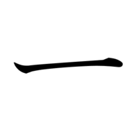
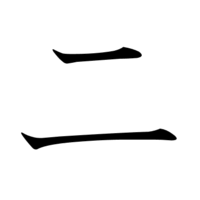
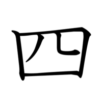
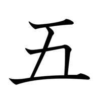
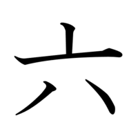

Kanji
Los kanji (漢字) son los caracteres japoneses de origen chino que se utilizan como sistema de escritura en el japonés junto con el katakana y el hiragana. Cada kanji significa algo en sí mismo. Además, los kanji tienen diferentes lecturas dependiendo de cómo se utilice, y se pueden combinar para formar palabras nuevas.

- Nivel: 1
- Trazos: 1
- Radical: 一
- On'yomi: イチ (ichi), イツ (itsu)
- Kun'yomi: ひと (hito), ひと.つ (hito-tsu)
- Significado: uno, 1

- Nivel: 1
- Trazos: 2
- Radical: 二
- On'yomi: ニ (ni)
- Kun'yomi: ふた (futa), ふた.つ (futa-tsu)
- Significado: dos, 2

- Nivel: 1
- Trazos: 3
- Radical: 一
- On'yomi: サン (san)
- Kun'yomi: み (mi), み.つ (mitsu), みっ.つ (mit-tsu)
- Significado: tres, 3

- Nivel: 1
- Trazos: 5
- Radical: 囗
- On'yomi: シ (shi)
- Kun'yomi: よ (yo), よ.つ (yotsu), よっ.つ (yot-tsu), よん (yon)
- Significado: cuatro, 4

- Nivel: 1
- Trazos: 4
- Radical: 一
- On'yomi: ゴ (go)
- Kun'yomi: いつ (itsu), いつ.つ (itsu-tsu)
- Significado: cinco, 5

- Nivel: 1
- Trazos: 4
- Radical: 亠
- On'yomi: ロク (roku)
- Kun'yomi: む (mu), む.つ (mu-tsu), むっ.つ (muttsu), むい (mui)
- Significado: seis, 6